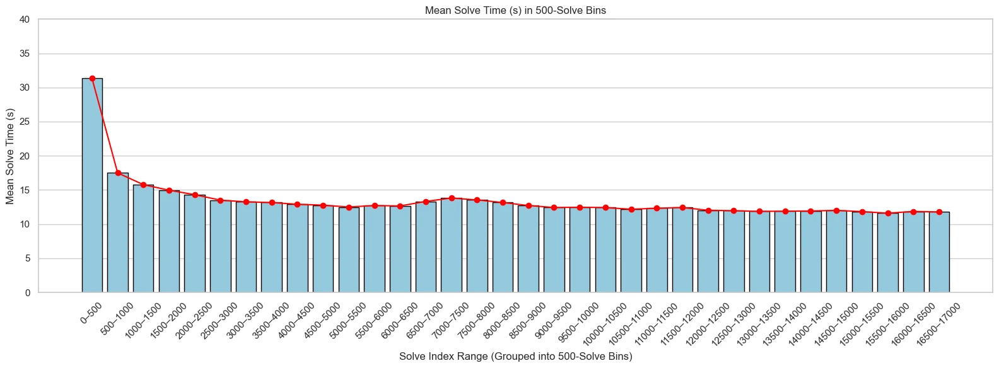

01 / SUMMARY
A project with a personal stake.
I’ve been speedcubing since I was 11. I spend a lot of time trying to shave fractions of a second off a solve, but I wanted a clearer picture of where that time was going.
csTimer had been quietly collecting years of my virtual solves, where keyboard presses turn and rotate the cube. When I considered using the export for a statistics project, a friend in grad school advised against it: the raw data would be too messy. I decided the question mattered enough to work through it.
Across two statistics finals, I analyzed my own solving history, explored the patterns, compared regression models, and interpreted what the results might mean for practice.
Where should I focus: faster turning, fewer moves, fewer pauses—or something else?
02 / METHODS
From nested events to useful questions.
The export contained all of my csTimer sessions, not a ready-made table. The first step was isolating the virtual-cube session and translating nested move records and timestamps into one row per solve.
- Make the data usable. Separate turns from whole-cube rotations, calculate the longest pause and fastest ten-turn burst, count immediately reversed moves, and derive day and time categories.
- Clean with context. Retain the early learning phase while filtering unusually long pauses and excessive rotations after the first 500 solves. The fall analysis used 16,776 cleaned solves; the later dataset grew to 22,442.
- Explore three questions. Compare solve-time relationships, track progress by solve order and calendar month, and examine when I practiced.
- Extend the analysis. Compare eight progressively expanded linear specifications and a ninth model with degree-two terms and ridge regularization, using an 80/20 split and five-fold cross-validation for ridge tuning.
03 / RESULTS
The pauses mattered. Progress was uneven.
Longer pauses accompanied slower solves. In the final dataset, longest-pause duration and solve time had a correlation of about 0.67. The duration of the fastest ten-turn burst was closely associated with solve time too (r ≈ 0.66). These are descriptions of my completed solves, rather than proof of what a training change would cause.
Improvement didn’t look like a straight line. The fall analysis showed fast early gains as I learned the keyboard controls, followed by slower, irregular improvement. A frustrating stretch of similar times could sit inside a longer downward trend.

My practice had a rhythm. Mondays and Tuesdays were the busiest days; weekends were quieter. Evening practice was common, while mornings were rare. That made sense: the virtual cube often filled a study break when a physical cube would be disruptive.
Scope & a useful next step
These are one person’s virtual solves; keyboard controls do not capture physical-cube ergonomics. Several regression models also included turning speed calculated from solve time itself. Their reported prediction scores need reanalysis. A stronger next version would remove that feature and evaluate on later solves held out chronologically.
04 / WHAT I LEARNED
Keep working on the weakest part.
The project gave me a more specific way to think about practice: plan further ahead, work toward fluid turning, and pay attention to hesitations instead of only chasing a higher top speed.
The slower, uneven learning curve was reassuring, too. It echoed something I already recognized from cubing: improvement often comes from finding one weakness, working on it, and then finding the next. A plateau does not always mean nothing is changing.
I’m glad I chose a question connected to something I care about. Getting the export into a usable form took work, but it made the analysis worth doing—and the conclusions worth thinking about afterward.
05 / LOOK CLOSER